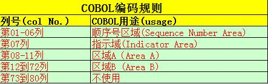

Watir自动为优酷视频刷顶
很喜欢优酷上面的一个节目，想帮帮它早日升到排行榜怎么办？写个脚本好了。
#encoding: UTF-8 #添加这一行才可以处理中文
require 'rubygems' #gem install xxx --no-ri --no-rdoc
require 'timeout'
require 'watir-webdriver'
b = Watir::Browser.new(:firefox, {:profile => 'default'})
b.driver.manage.timeouts.implicit_wait =60 #默认的等待页面加载30秒若还未加载完成则会跑出timeout异常，这里可以修改成60秒
b.goto 'http://v.youku.com/v_show/id_XNTE5MTY3NzI4.html' #假设我现在要为这个视频刷“顶”
for i in 1..100 #假设我这里要"顶 ...Job(JCL)返回码
提交JCL最常见的返回码就是0、4、8、12、16，当然还有ABEND。
CC=0 作业正确执行(Executed Successfully)
CC=4 警告 一般不影响作业执行 (Executed Successfully but with warnings)
CC=8 作业可以执行，但执行的不完整 (Error)
CC=12 作业不能执行 (Serious Error)
CC=16 严重错误，中断后续命令的执行(Fatal Error)
ABEND 作业异常终止
下面是一些常见的JCL ABEND CODES
S0C4 Protection Abend.Caused by the subscript ...
利用IBM File Manager查看COPYBOOK
这篇文章就来说下在大机上如何利用IBM File Manager来查看copybook的结构，特别是每个字段的起始位置。
1.在Command栏输入0;5;1 设置自动检测语言
这样，不论你的copybook是PLI的还是COBOL的，FileManager都能自动检测出来。


2.设置好之后，进入3；13 (Utility->Copybook)

这里填写copybook的路径和member名，member栏也可以不写:

接着就能查看copybook内容了，特别是查看某个字段起始位置的时候特别有用。

上面的MYPLICPY是PLI的copybook，COBOL的这里就不上图了，上图很累的。
more ...
Changeman的Stage和Checkout
把一个component(比如程序PRGM001)弄到package里面去有两种方法：一是stage，二是checkout。
Stage
所谓的stage就是当生产环境上面没有的，而你要将一个新的component弄到生产上面去的时候用stage。比如生产环境上面没有PRGM001这个程序，如果你最终想把这个程序通过Changeman安装到生产环境，那你就得现在自己的PDS下面建一个名为PRGM001的程序：
TESTUID.PRGMLIB(PRGM001)
然后stage到changeman里面去，具体做法是在ISPF输入:
C;1;5;
输入你的Package ID,回车 在Package前面输入命令：
S1

Checkout
和stage不同，checkout是针对那些已经存在于生产环境里面的components。它们是有版本之分的，比如你要Checkout一个现在已经存在于生产环境的PRGM002,在Package前面输入命令
C1

这里注意一下SOURCE LIBRARY.
SOURCE LIBRARY=0 说明checkout的是当前生产环境baseline里面的最新版本。
SOURCE LIBRARY=-1说明checkout的是比当前生产环境baseline旧的一个版本。
以此类推...
最后，在Package ID前面输入命令S2，查看package里面所有的components ...
IBM大型机12月16日起支持Windows系统[转载]
本文来源——http://www.sina.com.cn 2011年11月07日 15:58 新浪科技微博 新浪科技讯 北京时间11月7日下午消息，据美国IT网站ComputerWorld报道，IBM大型机将从今年12月中旬开始支持Windows系统。
IBM此前就有意在zEnterprise 196大型机中采用Windows系统。根据IBM发布的最新消息，该公司大型机将从今年12月16日起支持Windows管理功能。用户一直希望数据中心有新的功能。当前，有许多基于Windows的应用可支持大型机获取数据，其中就包括IBM制造的许多应用。但此类应用现在必须单独管理。 IBM表示，支持Windows系统将有助于提高大型机企业环境的安全性和速度，同时让用户可以在私人网络上连接系统，避免其他网络问题，实现一体化管理。IBM System z部门业务主管格雷格·洛特科(Greg Lotko)说：“之所以增加对Windows系统的支持，是因为IBM真正认识到这个世界的复杂性。”
洛特科补充说，从今往后，IBM System z平台可以支持z /OS、Linux、Unix 和Windows等多套系统 ...
COBOL编码规则
苦逼的COBOL们一定知道和JCL一样，在写COBOL程序的时候对源码的区域也有一定的制约的，具体如下表所示：

第7列用来说明程序所在行的用途:
连接符(-): 表示本行是上一行的续行；
('D'): 表示查错；
星号('*'): 表示注解；
下面的COBOL程序元素必须从A区域开始：
部(DIVISION)和节(SECTION)的标题
段名
程序结尾(End Program)标题
级别标示符如FD或者SD等，级别号如01级和77级
下面这些COBOL元素必须从B区域开始：
语句、句子和短语继续行
[注：本文内容源自：《IBM主机技术一本通》]
more ...COBOL程序典型结构
一个典型的COBOL程序结构是：程序由许多‘部’组成，每个‘部’可以包含多个‘节’
COBOL PROGRAM (程序)
DIVISION(部)
SECTION(节)
PARAGRAPH(段)
SENTENCE(句子)
STATEMENT(语句)
整个COBOL程序由4个'部'(DIVISION)组成：
Identification Division 标识部 Environment Division 环境部 Data Division 数据部 Procedure Division 过程部
用一句话介绍这四个部：标志部提供作者和编译器信息；环境部提供程序运行的环境；数据部描述程序处理的绝大部分数据；过程部描述对数据部描述的数据的操作算法:
Identification Division(标识部)--主要是程序和作者名
IDENTIFICATION DIVISION.
PROGRAM-ID ...提交JCL的4种方式
总结了下在主机上面提交JCL的四种方式：
1.用VIEW或者EDIT打开JOB,在命令行上输入SUBMIT或者SUB:
2.直接在JOB前面输入SUBMIT或者SUB，不用打开:
3.命令行模式下输入命令:

4.Q;ST进入SDSF，找到你最近run过的JOB，在它前面输入SJ，回车，输入SUB,提交job。
more ...
utility判断dataset是否为空的方法
下面介绍四种利用Utility的返回码来判断一个dataset或者member是否为空文件的方法：
1.利用IDCAMS

2.利用SORT(DFSORT/SYNCSORT)

3.利用ICETOOL(SYNCTOOL)

4.利用ISRSUPC

方法不止以上四种，还有利用REXX脚本也可以判断，只是不属于本文讨论的范围。
vmware8下给windows8安装vmware tools
昨晚在Vmware8下安装了windows8，今天打开发现没有声音。晕，竟然忘了安装Vmware tool了！这里先说一下安装VMware tool有什么好处：
- 解决windows8在vmware8下没有声音的问题；
- 解决不能在自身系统和虚拟机vmware8之间拷贝，粘贴，移动数据和文件的问题；
- 解决共享文件夹在vmware8的windows8下不能使用的问题；
- 其他好处；
下面简单的说说如何在Vmware8下为window8-dev-preview(开发者预览版)安装vmware tool。
1、 安装完VMware Workstation 8.0.0.471780之后，在安装目录下自带了适合各个系统的vmware tools，这里我们当然选用windows.iso啦！在windows8虚拟机设置的光盘(CD/DVD)设置里面输入windows.iso的路径，比如我的是：D ...